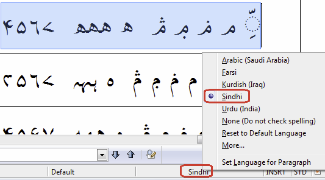

Frequently Asked Questions
Many questions can be answered by consulting the following FAQ pages. Here are a few sample questions answered in each FAQ:
- SIL fonts in
general
- How can I type...?
- How can I use font features?
- Will you add support for character...?
- Will you add support for script...?
- WIll you help me...?
- The SIL Open Font
License (OFL-FAQ)
- Can I use this font for...?
- Can I modify the font and then include it in...
- If I use the font on a web page do I have to include an acknowledgement?
- The full OFL-FAQ.txt is also included in the font package.
FAQs for specific fonts
Generic FAQs for all the Arabic script fonts
Arabic script complexities
Can you explain how to use the spanning marks in Arabic script?
Some characters in Arabic script are signs that span (or enclose) numbers, such as U+06DD End of Ayah and U+0605 Number Mark Above. See Signs Spanning Numbers for an extensive explanation.
The design of NOON GHUNNA and some of the other characters do not follow my expected dot pattern. Can you please fix the design?
SIL fonts have implemented the behavior for NOON GHUNNA and other characters as defined and documented by Unicode. See Characters which follow a different dot pattern for a list of characters which may follow and different pattern than expected.
How do I get correct display for "Chapter:Verse" references using a regular "Roman" colon?
In RTL texts a “chapter:verse” reference is often written as "verse:chapter" or "endverse-startverse:chapter". For example:
| Chapter | Verse | LTR rendering: | Desired RTL rendering: |
|---|---|---|---|
| 1 | 2 | 1:2 | 2:1 |
| 12 | 34-56 | 12:34-56 | 56-34:12 |
Digits can display in different orders, depending on the punctuation around them.
Consider whether you want:
| LTR Rendering | Codepoints | RTL Rendering | Comment |
|---|---|---|---|
| a | 12:34-56 | U+0031, U+0032, U+200F, U+003A, U+0033, U+0034, U+200F, U+002D, U+0035, U+0036 | 56-34:12 |
| b | 12:34-56 | U+0031, U+0032, U+200F, U+003A, U+0033, U+0034, U+200E, U+002D, U+0035, U+0036 | 34-56:12 |
For option a, the RLM (U+200F RIGHT-TO-LEFT MARK) is inserted before the colon and before the hyphen. For option b, the RLM is inserted before the colon and the LRM (U+200E LEFT-TO-RIGHT MARK) is inserted before the hyphen. Option b is rather unusual, but it is used in some regions.
This was tested in LibreOffice and NotePad. It is important to insert the marks in both positions in order to have consistent behavior across different applications. Unfortunately, Word has its own issues with how it handles this. The Right-to-left scripts in Microsoft Office template will be useful to read and use for Word documents.
General Use in Applications
How do I use Arabic script in Microsoft Office?
The ability to display right-to-left (RTL) and other complex scripts is built into the standard editions of Microsoft Office since Office 2000.
These instructions are written for Office 2016 on Windows 10. However, similar steps can be taken on older applications and versions of Windows. First, close any Office applications that are open. Next, you must enable an Arabic language in Microsoft Office 2016 Tools / Office 2016 Language Preferences (in the Start menu). Click on Add additional editing languages and choose one of the Arabic languages. Then click on "Add". The Keyboard Layout will say "Not enabled". If you think you'll need to type in Arabic, now would be a good time to double-click on that and select an Arabic keyboard.
Now you can open Word. If you go to File / Options / Advanced you can select Cursor movement under Editing options. Under Show document content you can choose whether you want "Arabic" or "Hindi" numerals, choose to show Diacritics in another color if desired, and you can choose to set the Document view to Right-to-left. All of these choices affect your whole document. Click on OK.
Note for RTL books (e.g., Arabic books, etc.) in Microsoft Word, to get page headers to flow properly from right to left, you need to go to File / Options / Advanced / Show document content / Document view and set it to Right-to-left. This option is only available if you have a RTL language installed in Windows. This language can get added to all documents by using the "Microsoft Office Tools" program. Unfortunately, when you set the Right-to-left option in Options, this affects every document you open. This means that if you are switching between LTR and RTL books, you will need to change this setting each time you switch to a file with a different format.
It's also possible to just set Paragraph direction for one or more paragraphs in your document. You should now have a Right-to-left and Left-to-right icon selection. To do that, choose the Paragraph marker with triangle pointing left for setting text to be Right-to-left. This should also automatically change the paragraph to "Align Right".
This will get you a long way toward using Arabic script in Microsoft Office. There are sometimes other issues and if you run into problems, you will likely want to use the document template that we have created and linked to below.
In the link below, a document template provides helpful hints on use of RTL scripts in Microsoft Word 2000 or later. Included are general instructions for getting such scripts to work correctly, known bugs and weaknesses, and various tips and tricks. There are also some macros that may be helpful when working with RTL scripts.
The template is available here: Right-to-left scripts in Microsoft Office.
How do I use Arabic script in InDesign?
There are several settings you must check in order to have proper rendering in InDesign. First of all, in the Character widget, you should make sure your text is tagged with the Arabic language. The Opentype Contextual Alternates should be selected and Kerning should set to Metrics or "0". The default for Kerning seems to be Optical, but when that is set there might be tiny spaces between the characters which you do not want. Next, in the Paragraph widget, make sure your text is tagged with the Adobe World-Ready Paragraph Composer and possibly set your text to Align Right.
You do not need Indesign ME or World Tools to get RTL working properly in Indesign. You can edit the Windows registry and change the Feature Set Locale from 100 to 103 to get most of what you need. First, please backup your registry in case you run into problems. Instructions for backing up your registry are available here. Next, using regedit (type the Windows key, type in regedit and hit enter), go to the InDesign Feature Set Locale Setting.
The RegEdit window will look something like this afterwards:

Once you do this, when you open InDesign you will have access to the ME paragraph settings. See below.
How do I use Arabic script in InDesign ME?
Some people have run into problems with the combining marks behaving improperly (farther away from the base character than the font design intended, or even above a character when it should be below). In that case, go to the Paragraph Stylesheet:
Select Paragraph settings. Make sure that the InDesign ME diacritic positioning is using the OpenType setting.
How do I use Arabic script in LibreOffice?
There are probably many levels to this question. We'll start by getting you set up properly in LibreOffice. First of all you should enable Complex Text Layout (CTL) in LibreOffice. Do this by going to Tools > Options > Language Settings > Languages. Then click on Show UI elements for Bi-Directional writing. Then go up to CTL and select an Arabic language such as Arabic (Saudi Arabia). Click on OK.
Next, you should go to View > Toolbars and make sure Formatting is selected. You should now see the Right-to-Left (RTL) button.
You may need to restart LibreOffice before these buttons show up. Now, when you have Arabic script text you should make sure to select the text and click on the RTL button. This will ensure that all (or most) of your RTL directionality issues (such as punctuation and numbering) are resolved.
If you wish to input Arabic script text you will also want a keyboard. You can either choose one of the operating system keyboards or if you have a Keyman keyboard you should associate it with an Arabic script language (such as Arabic (Saudi Arabia)). Associating your keyboard with Arabic (Saudi Arabia) should make LibreOffice switch to the Arabic (Saudi Arabia) language when you select your keyboard.
I am experiencing what appears to be corruption of my data in LibreOffice when I use one of your fonts. What is the matter and how do I fix it?
It is important that you have the latest version of LibreOffice installed as that fixes some potential bugs.
However, the problem is likely related to how Windows handles
font installation. Some of our Scheherazade font testers have
experienced this problem. It is likely caused because font testers
were installing the font numerous times in testing. If you go to the
Command Prompt and look in your C:\Windows\Fonts
folder, you may discover that you have various versions of
Scheherazade in that folder:
ScheherazadeNew-R.ttf
ScheherazadeNew-R*0.ttf
ScheherazadeNew-R*1.ttfThese various versions of the font will not show up if you just go to your font folder in Windows Explorer, they only show up if you go to the Command Prompt. It is important to get rid of all of these, reboot and then reinstall the latest version of the font. Hopefully that will resolve your problem.
How do I use Arabic script in XeTeX and XeLaTeX?
For an OpenType font in XeLaTex, the font declaration would be:
\newfontfamily\fontnast[Script=Arabic]{Jameel Noori Nastaleeq}However, if it is a Graphite font, you need a different declaration:
\newfontfamily\urdufont[Renderer=Graphite]{Awami Nastaliq}It would also be useful to add
\XeTeXinterwordspaceshaping=1 to your file. Thus, you
might have:
\XeTeXinterwordspaceshaping=1
\newfontfamily\urdufont[Renderer=Graphite]{Awami Nastaliq}Some of the characters in the Arabic Supplement block and none of the new characters in the Arabic Extended-A and Arabic Extended-B blocks are rendering correctly. How can I resolve this problem?
Many of the characters in the Arabic Supplement block, and all of the characters in Arabic Extended-A and Arabic Extended-B were added to Unicode 5.1 or later. It has sometimes taken quite awhile for operating systems and/or applications to support these blocks.
Additionally, support for our fonts may depend on which rendering system is used. Some of our fonts support Graphite rendering only. Others may support only Opentype rendering and still others support both Graphite and Opentype.
Most of our fonts also support the OpenType shaping features specified by Microsoft. The result is that the fonts work pretty well in Microsoft Office 2010 (or later) as well as in most OpenType-based applications. Versions of Windows prior to Windows 8.1 do not include support for Unicode 6.1 and so do not support the Arabic Extended-A characters (U+08A0..U+08FF), nor a few new characters in the 06xx block. Windows 8.1 supports all Arabic script characters through Unicode 6.1 (including the new Arabic Extended-A characters). Microsoft Edge, Google Chrome, and Mozilla's Firefox and Thunderbird do provide OpenType support for the new Arabic Extended-A characters.
Please see our Application Support page for a more complete listing of which applications support different levels of Arabic script.
Feature Selection
I am using a TypeTuned font that I would like to use on my web site. Can you provide a TypeTuned WOFF font for me?
The great thing about web fonts is that you can use our standard normal fonts and let the CSS on your page handle the special alternate glyphs or behaviors that you are looking for. See Using SIL Fonts on Web Pages (OpenType and Graphite feature support) for instructions on using font features on web pages.
How do I use a language feature?
Many of our fonts support features for different languages. For example, Scheherazade New supports Urdu, Kurdish, Kyrgyz, Sindhi, Rohingya, and Wolof. If the application you are using supports the language, then you can select the text, select the appropriate font and then select the language. If you select "Sindhi" then the appropriate glyph variants for Sindhi should display.
How do I use a Graphite feature?
In a Graphite-enabled app where there is a proper UI: you can select the desired variant from the Format / Font / Feature menu (or however the interface is arranged).
In LibreOffice the font features can be turned on by choosing the font (ie Scheherazade), followed by a colon, followed by the feature ID, and then followed by the feature setting. So, for example, if the “Meem: Sindhi-style” is desired, the font selection would be “Scheherazade:cv44=1” (see the features document for the specific font). If you wish to apply two (or more) features, you can separate them with an “&”. Thus, “Scheherazade:cv44=1&cv72=1” would apply “Meem: Sindhi-style” plus the “Dammatan:Six-nine” feature.
How do I use a feature in XeTeX?
The XeTeX typesetting system supports language features, OpenType Stylistic Sets and Character Variants as well as Graphite features.
Include “feature=setting” pairs in the font specification within
the source document or stylesheet; e.g.,
fontbodytext=""Scheherazade New/GR:Meem=Sindhi-style on baseline" at 12pt
(for Graphite), or
fontbodytext=""Scheherazade New:script=arab:+cv44=1 on baseline" at 12pt
(for OpenType). The syntax for this can be derived from the Font
Features document for the specific font you are using.
How do I use a feature in XeLaTeX?
For XeLaTeX, the fontspec package must be used. The syntax might be something like:
\fontspec{Scheherazade New}[
Renderer=Graphite,
RawFeature={Dal=Alternate}Technical
Will font and glyph metrics stay the same in future versions?
We do not guarantee to keep metrics stable in future versions. The practical result of this means that you should expect to have different line lengths, paragraph length may be different, and line spacing may even be different. You should not expect your document to have the same page layout as you do with the current font.
Could you please add the Latin orthographic characters that are also needed for the languages that use both Latin and Arabic scripts?
Our focus for the Arabic script fonts is to provide excellent support for Arabic script. Adding complete Latin support for languages using both Arabic and Latin scripts would be too difficult. SIL does provide fonts that provide comprehensive Latin script support here.
Data Conversion
I have text in Latin script that I would like to convert to Arabic script - how can I do that?
Converting from Latin script (or any other script) to Arabic script is not usually a straightforward 1-1 conversion. However, it can be done. TECkit, SIL Converters, and the following webpage will be helpful in the process: Roman Script to Arabic Script Conversion.